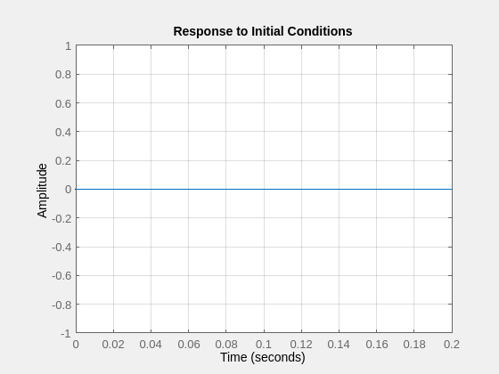
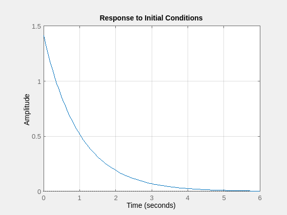
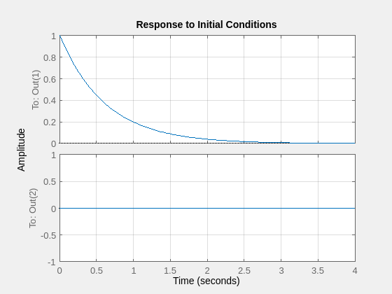
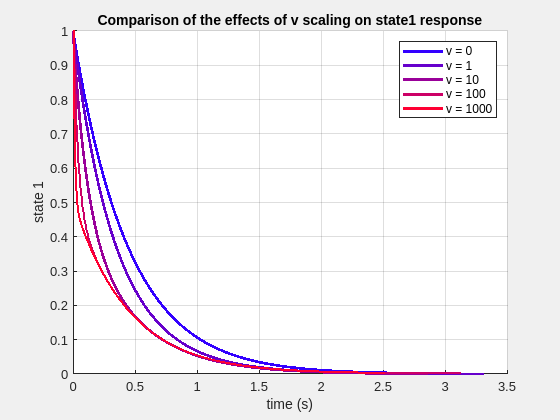
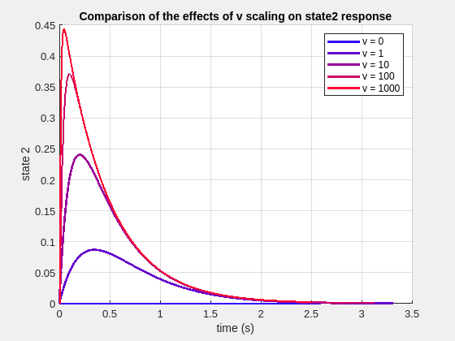

Contents
clearvars; close all; clc
1 - Implications of the Observability Gramian
1.1 - Observability Gramian
A1 = [[-1 0 0];[0 -1 0];[0 0 -2]];
B1 = [1;0;0];
C1 = [1 1 0];
D1 = 0;
sys1 = ss(A1,B1,C1,D1);
observability_gramian1 = gram(sys1, 'o')
[V_o, D_o] = eig(observability_gramian1)
observability_gramian1 =
0.5000 0.5000 0
0.5000 0.5000 0
0 0 0
V_o =
-0.7071 0 0.7071
0.7071 0 0.7071
0 1.0000 0
D_o =
0 0 0
0 0 0
0 0 1
1.2 - Zero Observability Initial Condition
figure(12)
h12 = initialplot(sys1, [0 0 3.141519e7]);
h12.setoptions('Grid', 'on')

1.3 - Unit Initial Condition Maximization
figure(13)
h13 = initialplot(sys1, [1/sqrt(2) 1/sqrt(2) 0]);
h13.setoptions('Grid', 'on')

2 - Stability
2.1 - Lyapnuov Stability (Lyapunov Method)
A2 = [[1 2 3];[0 5 6];[0 8 9]];
B2 = [1;1;1];
C2 = [0 1 0];
D2 = 0;
P = lyap(A2',eye(3))
P =
-0.5000 -0.1667 0.2500
-0.1667 2.2143 -1.4048
0.2500 -1.4048 0.7976
2.2 - Lyapunov Stability (Eigenvalues)
A2 = [[1 2 3];[0 5 6];[0 8 9]];
eig(A2)
ans =
1.0000
-0.2111
14.2111
3 - LQR (Infinite Horizon)
3.1 - Definition
3.2 - Design
3.3 - Simulation
A3 = [[-1 0];[0 -1]];
B3 = [[2 0];[0 2]];
C3 = [1 1];
Ceye = eye(2);
D3 = 0;
K3 = [[0.309 0];[0 0.309]];
eig(A3-B3*K3);
sys3_cl = ss(A3-B3*K3, B3, Ceye, D3);
initialplot(sys3_cl, [1;0])
grid on

3.4 - Comparison
R = [[1 0];[0 1]];
v_vec = [0 1 10 100 1000];
for i = 1:size(v_vec,2)
vi=v_vec(i);
sprintf('for v = %d', vi)
Qi = [[(1+vi) -vi];[-vi (1+vi)]]
[Ki,~,~] = lqr(A3,B3,Qi,R, [0])
sys3_cl_i = ss(A3-B3*Ki, B3, Ceye, D3);
[Y,T,X] = initial(sys3_cl_i, [1;0]);
figure(31)
hold on;
grid on;
plot(T,X(:,1), 'LineWidth', 2, 'DisplayName', sprintf('v = %d', v_vec(i)), 'Color', [i/size(v_vec,2),0,(1+1/size(v_vec,2))-i/size(v_vec,2)]);
legend('-DynamicLegend');
legend('show');
xlabel('time (s)');
ylabel('state 1');
title('Comparison of the effects of v scaling on state1 response');
figure(32)
hold on;
grid on;
plot(T,X(:,2), 'LineWidth', 2, 'DisplayName', sprintf('v = %d', v_vec(i)), 'Color', [i/size(v_vec,2),0,(1+1/size(v_vec,2))-i/size(v_vec,2)]);
legend('-DynamicLegend');
legend('show');
xlabel('time (s)');
ylabel('state 2');
title('Comparison of the effects of v scaling on state2 response')
end
figure(31)
hold off;
figure(32)
hold off;
ans =
'for v = 0'
Qi =
1 0
0 1
Ki =
0.6180 0
0 0.6180
ans =
'for v = 1'
Qi =
2 -1
-1 2
Ki =
0.9604 -0.3424
-0.3424 0.9604
ans =
'for v = 10'
Qi =
11 -10
-10 11
Ki =
2.3639 -1.7459
-1.7459 2.3639
ans =
'for v = 100'
Qi =
101 -100
-100 101
Ki =
7.1521 -6.5341
-6.5341 7.1521
ans =
'for v = 1000'
Qi =
1001 -1000
-1000 1001
Ki =
22.4267 -21.8086
-21.8086 22.4267
 
4 - LQR (Finite Horizon)
4.1 - Forward Ricatti Equation
4.2 - Optimal Gain Trajectories
tf = 10;
R = eye(2);
B4 = [[2 0];[0 2]];
simOut = sim('MAE272_HW5_Q4');
y = simOut.get('yout');
t = simOut.get('tout');
p11_bar = y{1}.Values.Data;
p12_bar = y{2}.Values.Data;
p22_bar = y{3}.Values.Data;
t = tf - t;
P = [[p11_bar p12_bar];[p12_bar p22_bar]];
K11 = 2*p11_bar;
K12 = 2*p12_bar;
K22 = 2*p22_bar;
K = [[K11 K12];[K12 K22]];
figure(4)
grid on
hold on
plot(t,K11, 'LineWidth', 2, 'DisplayName', 'K11')
plot(t,K12, 'LineWidth', 2, 'DisplayName', 'K12')
plot(t,K22, 'LineWidth', 2, 'DisplayName', 'K22')
xlabel('time (s)')
ylabel('gain K(t)')
title('Finite LQR Gain trajectories')
legend()